VideoGameQA-Bench: Evaluating Vision-Language Models for Video Game Quality
Assurance
Mohammad Reza Taesiri, Abhijay Ghildyal, Saman Zadtootaghaj, Nabajeet Barman,
Cor-Paul Bezemer
With video games now generating the highest revenues in the entertainment industry, optimizing
game development workflows has become essential for the sector's sustained growth. Recent
advancements in Vision-Language Models (VLMs) offer considerable potential to automate and
enhance various aspects of game development, particularly Quality Assurance (QA), which remains
one of the industry's most labor-intensive processes with limited automation options. To
accurately evaluate the performance of VLMs in video game QA tasks and determine their
effectiveness in handling real-world scenarios, there is a clear need for standardized
benchmarks, as existing benchmarks are insufficient to address the specific requirements of this
domain. To bridge this gap, we introduce VideoGameQA-Bench, a comprehensive benchmark that
covers a wide array of game QA activities, including visual unit testing, visual regression
testing, needle-in-a-haystack tasks, glitch detection, and bug report generation for both images
and videos of various games.
The global video game industry continues to expand rapidly, with its market value projected to reach $257
billion by
2028. Alongside this substantial growth, the process of developing high-quality video games remains
inherently
complex and demanding. A critical challenge within game development is to ensure visual quality and
consistency
through a rigorous visual testing and quality assurance (QA) process. Automation of visual QA tasks remains
particularly challenging, and currently, most visual QA relies heavily on manual inspection, making the
process
time-consuming, costly, labor-intensive, and prone to human error.
The visual QA process for video games can generally be abstracted into three main types of tasks:
Verifying scene integrity by comparing the visual representation of scenes against
intended
configurations and known reference states, such as an oracle or previously rendered versions of the same
scenes.
Detecting glitches through open-ended exploration—these glitches are unintended
gameplay or
visual artifacts without specific reference points, requiring testers to rely on common sense and
general
knowledge for detection.
Systematically reporting and documenting all identified glitches, ensuring developers
receive
clear and actionable information to address problems effectively during game development.
Recent advancements in vision-language models (VLMs) present promising opportunities to automate and
significantly
enhance the efficiency of video game QA. However, progress in applying VLMs to game QA has been limited by
the lack
of standardized benchmarks. Current multimodal benchmarks tend to focus heavily on complex mathematical or
textual
reasoning tasks, overlooking essential visual comprehension tasks fundamental to video game QA. Similarly,
existing
game-specific benchmarks often represent only narrow aspects of QA tasks, thus inadequately evaluating and
tracking
VLM performance across diverse QA scenarios.
Our Contributions
In this paper, we introduce GameQA-Benchmark, a benchmark designed to fill the gap in
evaluating
VLMs for video game QA. Our key findings and contributions are as follows:
We present VideoGameQA-Benchmark featuring 9 distinct tasks and a large set of
questions
designed
considering real-world video game development scenarios, such as visual unit testing, regression
testing, UI
validation, video needle-in-a-haystack, and glitch detection.
While VLMs show promising performance on various multimodal benchmarks and can function as OCR systems,
they
perform poorly at detecting fine details required for accurate scene understanding and parsing complex
UI
elements.
Frontier VLMs show good performance on the glitch detection task using images (up to 82.8%) and videos
(up to
78.1%); however, all struggle when it comes to glitches related to body configuration, intricate object
clipping, and common-sense reasoning.
Visual regression testing remains one of the most challenging tasks for VLMs.
Locating specific glitch moments in videos remains a challenge, both in detecting and accurately
pinpointing the
glitch.
Frontier VLMs can generate useful bug reports for up to 50% of real-world glitches, providing accurate
and
descriptive summaries of the glitches.
VideoGameQA-Bench
We designed VideoGameQA-Benchmark's tasks by simulating realistic QA scenarios encountered
during actual video game development. However, to make the benchmark more relevant for future QA automation
tasks, we also included tasks that may challenge current software engineering practices while also remaining
highly
relevant. The table below provides an overview of the contents of each task in the benchmark.
In summary, VideoGameQA-Benchmark contains 2,236 image-based samples and 1,200
video-based
samples sourced from more than 800 games and 9 synthetic game scenes.
Image-based Tasks
Visual Unit Testing
Visual unit tests verify visual attributes including presence, placement, positioning, colors, conditions,
and
other relevant properties of various image elements.
How many of Spider-Man's and Black Cat's eye areas, including those covered by their masks, are
visible in the
image?
Based on the image answer the following questions:
What is the primary color of the rally car?
Is the driver-side door of the car open or closed?
What number is displayed in large font on the car's door?
What brand name is visible on the yellow decal above the 'elf' logo on the car's side?
Is there a coiled orange air hose hanging from the ceiling on the left side?
What type of pattern is on the floor directly beneath the car?
Is there a screen or monitor mounted on the wall displaying graphs?
Provide your answer in the following JSON format:
{
"car_primary_color": "", // options: ["light blue", "dark blue", "white", "red", "black"]
"driver_door_state": "", // options: ["open", "closed"]
"car_door_number": 0, // Integer value
"yellow_decal_brand": "", // String value representing the text
"coiled_hose_visible": false, // true or false
"floor_pattern": "", // options: ["plain", "checkered", "tiled", "textured_metal"]
"wall_monitor_visible": false // true or false
}
Sample from the Visual Unit Testing task.
UI Unit Testing
UI (visual) unit tests verify in-game UI elements such as menus, subtitles, heads-up displays (HUDs), and
interface components like graphs and charts. We simulate the UI unit testing tasks by asking the
vision-language
model questions about game screenshots.
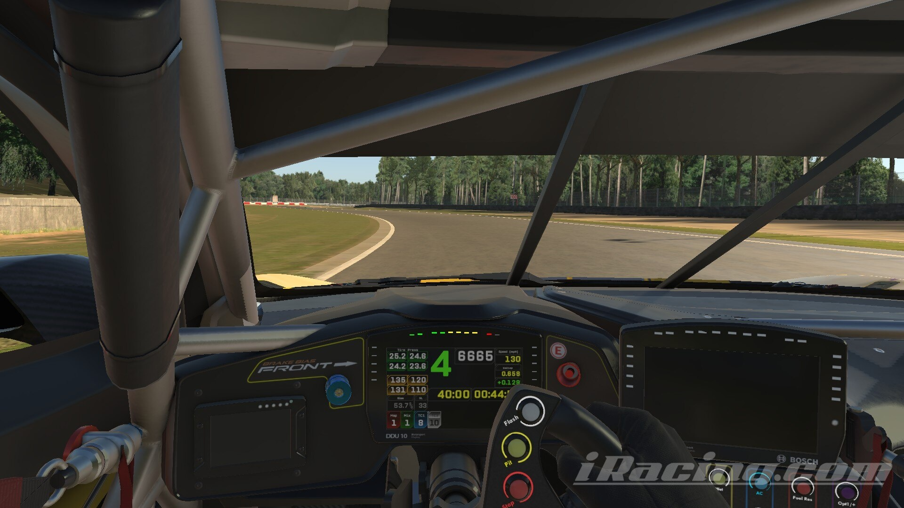
Read the dashboard and fill the JSON values below:
Please provide the values of the dice in the topmost row from left to right, and return them as a
JSON list.
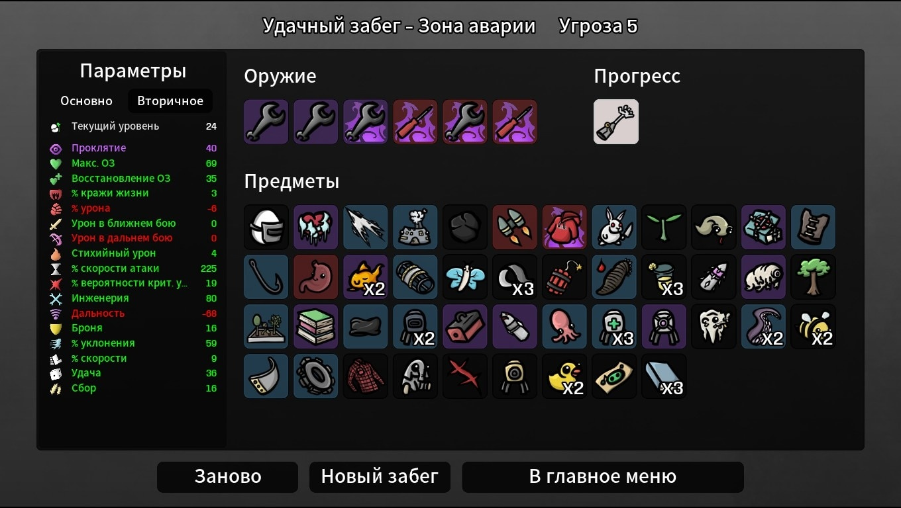
Based on the image, extract the list of weapons (single word) and return it in the following JSON
format:
{ "items": ["weapon"] }
Sample from the UI Unit Testing task.
Visual Regression Testing
Visual regression tests check for unintended visual changes after a change to the game. A simple
pixel-by-pixel
comparison of two screenshots is not sufficient, as some variations (e.g., because of character
customization or
weather conditions in the game) may be acceptable.
Visual regressions may occur in cinematic parts of the game, such as cutscenes that have a defined sequence
flow. We simulate this task by asking the VLM to compare whether two screenshots are similar, taking into
account the specified acceptable or unacceptable variations.
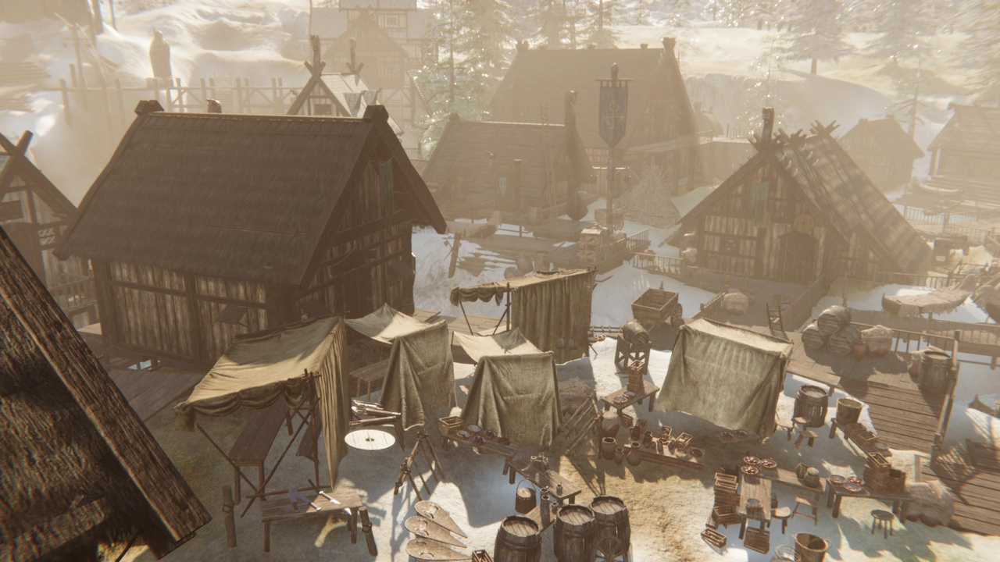
Image Version 1
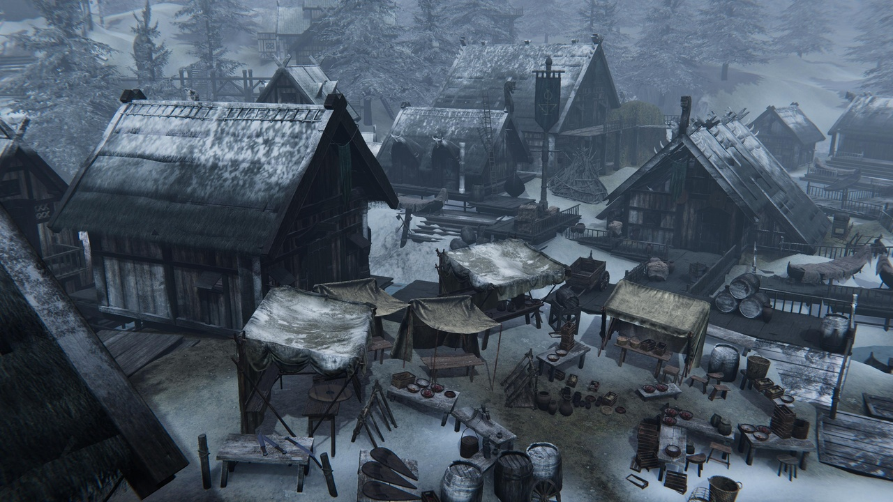
Image Version 2Image Version 1Image Version 2
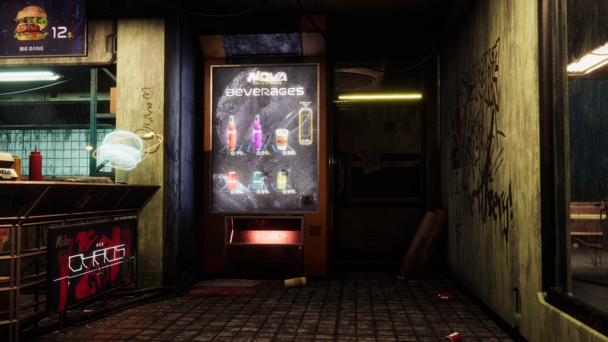
Image Version 1
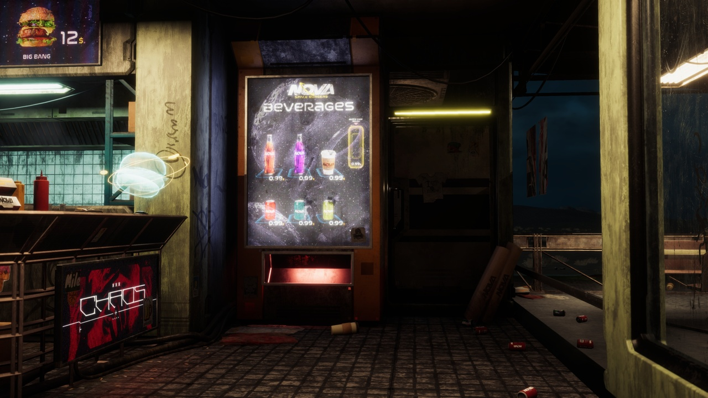
Image Version 2Image Version 1Image Version 2
Sample from the Visual Regression Testing task.
Glitch Detection
Glitch detection is the process of identifying unintended visual errors, such as rendering issues, clipping,
or
physics/logical bugs that express themselves visually. We simulate this task by asking the VLM whether
glitch
and glitch-free images contain a glitch.
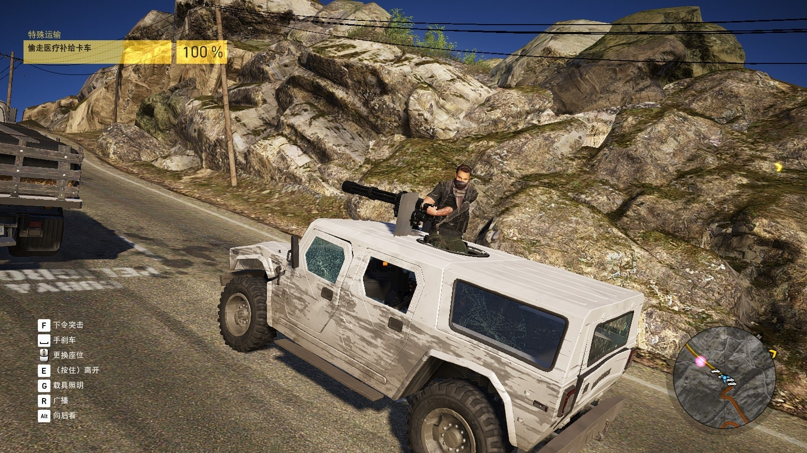
You are a helpful assistant analyzing video game images and screenshots for glitches. You will be
given a screenshot
from a video game, and your job is to analyze the screenshot and determine whether it contains a
glitch.
Provide your answer in the following format:
{
"reasoning": "Brief explanation of why you think a glitch is present",
"glitch_detected": true or false,
"description_of_glitch": "Description of the glitch if detected else empty string"
}
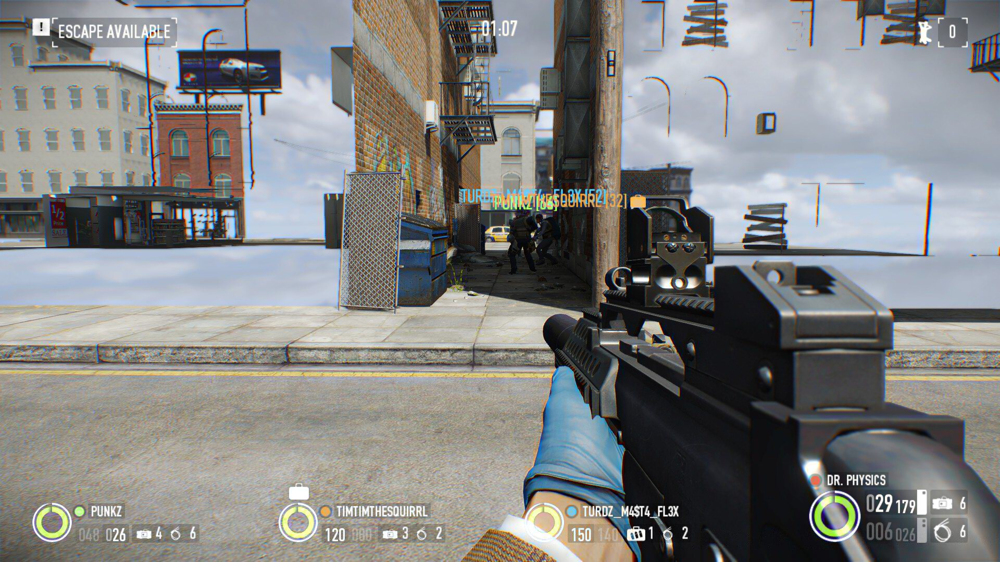
You are a helpful assistant analyzing video game images and screenshots for glitches. You will be
given a screenshot
from a video game, and your job is to analyze the screenshot and determine whether it contains a
glitch.
Provide your answer in the following format:
{
"reasoning": "Brief explanation of why you think a glitch is present",
"glitch_detected": true or false,
"description_of_glitch": "Description of the glitch if detected else empty string"
}
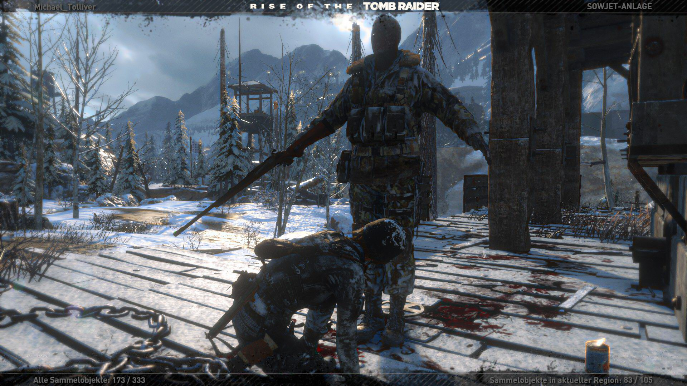
You are a helpful assistant analyzing video game images and screenshots for glitches. You will be
given a screenshot
from a video game, and your job is to analyze the screenshot and determine whether it contains a
glitch.
Provide your answer in the following format:
{
"reasoning": "Brief explanation of why you think a glitch is present",
"glitch_detected": true or false,
"description_of_glitch": "Description of the glitch if detected else empty string"
}
Sample from the Glitch Detection task.
Parametric Clipping Detection
Given the common occurrence of clipping in games, our benchmark includes a dedicated task to evaluate a
model's
ability to detect such glitches. In this task, images feature an object (e.g., a cube, sphere, or character)
positioned at varying distances from a human character — from far apart to fully overlapping/clipping. The
VLM
is asked whether it detects clipping across each of these distances.
Sample from the Parametric Clipping Detection task.
Bug Report Generation
In addition to testing and detection tasks, a potential application of VLMs is to assist QA engineers with
writing reports for detected bugs. We simulate this task by asking the VLM to write a description of a
glitch
image that can be used in a bug report.
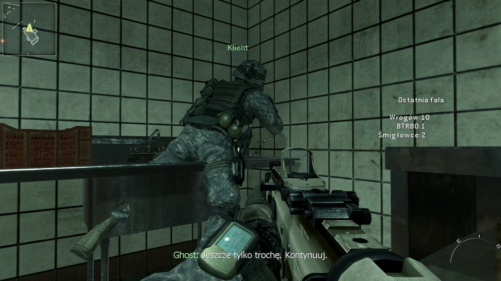
You are a video game quality assurance assistant who analyzes screenshots to identify and document
visual glitches. When presented with an image, carefully examine it for any graphical bugs or
rendering issues.
Provide your analysis in the following JSON format:
{
"reasoning": "Brief explanation of what you observe and why it appears to be a glitch",
"bug_report_title": "A clear, concise title summarizing the issue",
"bug_report_description": "Detailed description of the visual bug, including its appearance and potential impact on
gameplay",
"affected_item": "The specific game element (character, object, environment, UI) affected by the glitch"
}
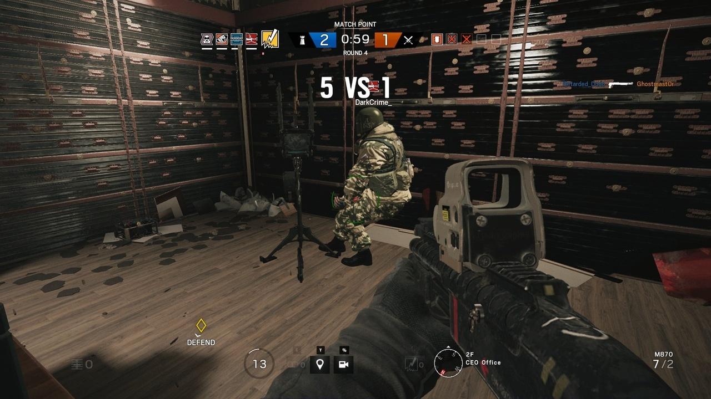
You are a video game quality assurance assistant who analyzes screenshots to identify and document
visual glitches. When presented with an image, carefully examine it for any graphical bugs or
rendering issues.
Provide your analysis in the following JSON format:
{
"reasoning": "Brief explanation of what you observe and why it appears to be a glitch",
"bug_report_title": "A clear, concise title summarizing the issue",
"bug_report_description": "Detailed description of the visual bug, including its appearance and potential impact on
gameplay",
"affected_item": "The specific game element (character, object, environment, UI) affected by the glitch"
}
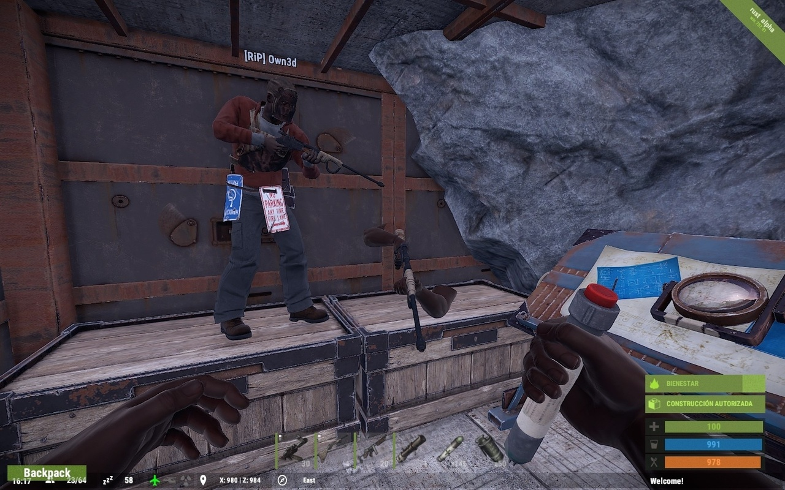
You are a video game quality assurance assistant who analyzes screenshots to identify and document
visual glitches. When presented with an image, carefully examine it for any graphical bugs or
rendering issues.
Provide your analysis in the following JSON format:
{
"reasoning": "Brief explanation of what you observe and why it appears to be a glitch",
"bug_report_title": "A clear, concise title summarizing the issue",
"bug_report_description": "Detailed description of the visual bug, including its appearance and potential impact on
gameplay",
"affected_item": "The specific game element (character, object, environment, UI) affected by the glitch"
}
Sample from the Bug Report Generation task.
Video-based Tasks
Glitch Detection (Video)
Glitch detection in videos can be used to verify autonomous gameplay sessions from bots. Detecting glitches
in
videos is significantly more complex due to challenges such as analyzing motion patterns, and may require
identifying transient glitches that appear only briefly in a few frames. We simulate this task by asking the
vision-language model whether it detects a glitch in a video.
Sample from the Glitch Detection (Video) task.
Needle-in-a-Haystack (NIAH)
Needle-in-a-Haystack (NIAH) is a more challenging long-context retrieval version of the glitch detection
task.
We simulate this task by asking the vision-language model whether it detects a glitch in a video, and in
which
frame the glitch occurs for the first time.
Sample from the Needle-in-a-Haystack (NIAH) task.
Bug Report Generation (Video)
In this task, the vision-language model is asked to provide a description of a glitch video that can be used
in
a bug report.
You are a video game quality assurance assistant who analyzes video clips to identify and document
visual glitches or strange behaviors. When presented with a video clip, carefully examine it for any
graphical bugs, rendering issues, physics anomalies, or unexpected events.
Provide your analysis in the following JSON format:
{
"reasoning": "Brief explanation of what you observe and why it appears to be a glitch",
"bug_report_title": "A clear, concise title summarizing the issue",
"bug_report_description": "Detailed description of the visual bug, including its appearance and potential impact on
gameplay",
"affected_item": "The specific game element (character, object, environment, UI) affected by the glitch"
}
You are a video game quality assurance assistant who analyzes video clips to identify and document
visual glitches or strange behaviors. When presented with a video clip, carefully examine it for any
graphical bugs, rendering issues, physics anomalies, or unexpected events.
Provide your analysis in the following JSON format:
{
"reasoning": "Brief explanation of what you observe and why it appears to be a glitch",
"bug_report_title": "A clear, concise title summarizing the issue",
"bug_report_description": "Detailed description of the visual bug, including its appearance and potential impact on
gameplay",
"affected_item": "The specific game element (character, object, environment, UI) affected by the glitch"
}
You are a video game quality assurance assistant who analyzes video clips to identify and document
visual glitches or strange behaviors. When presented with a video clip, carefully examine it for any
graphical bugs, rendering issues, physics anomalies, or unexpected events.
Provide your analysis in the following JSON format:
{
"reasoning": "Brief explanation of what you observe and why it appears to be a glitch",
"bug_report_title": "A clear, concise title summarizing the issue",
"bug_report_description": "Detailed description of the visual bug, including its appearance and potential impact on
gameplay",
"affected_item": "The specific game element (character, object, environment, UI) affected by the glitch"
}
Sample from the Bug Report Generation task.
Leaderboard
We evaluated a total of 11 proprietary and 5 open-weight models on VideoGameQA-Bench. Our
evaluation
includes both
standard models and those designed for extended reasoning.
Accuracy (%) scores of models on VideoGameQA-Bench.
Tasks: Visual unit testing (VU); UI unit testing (UI); Visual regression testing (VR); Image-based glitch detection (IGD); Parametric clipping detection (PCD); Image-based bug-report generation (IBR); Video-based glitch detection (VGD); Needle-in-a-haystack (NIAH); Video-based bug-report generation (VBR).
Scores marked with † were computed with the NIAH task set to 0.
Total is the mean of the image-task and video-task averages.